Atelier Takanasensei – A Community Space with Rescued Cats
Atelier Takanasensei is more than a cat café, more than a coworking space, and more than a rest stop.
It is a place where cats, people, and community come together.
Here, your experience is both healing for you and meaningful for the world around you.

What is Atelier Takanasensei?
Atelier Takanasensei is not just a cat café. It is a donation-based community space located in Lake Kawaguchiko, where rescued and former stray cats live freely and safely.
Here, cats are not “on display” they are family members who enjoy life at their own pace. Visitors are welcome to spend time with them, learn about their rescue stories, and relax in a warm, inclusive environment.
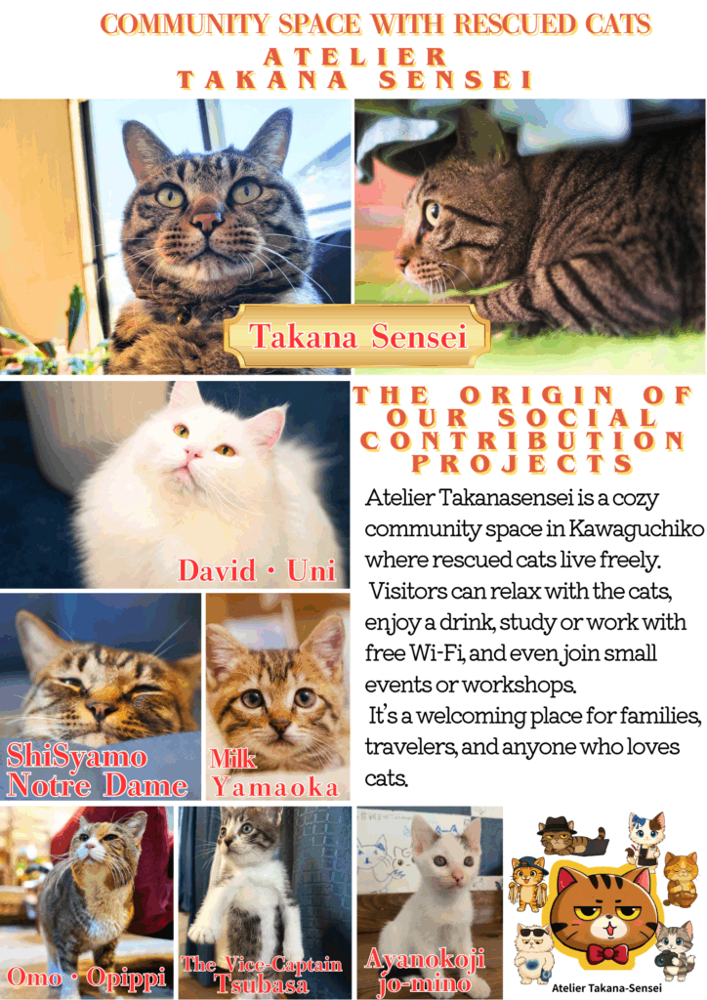
Spend Time with Cats
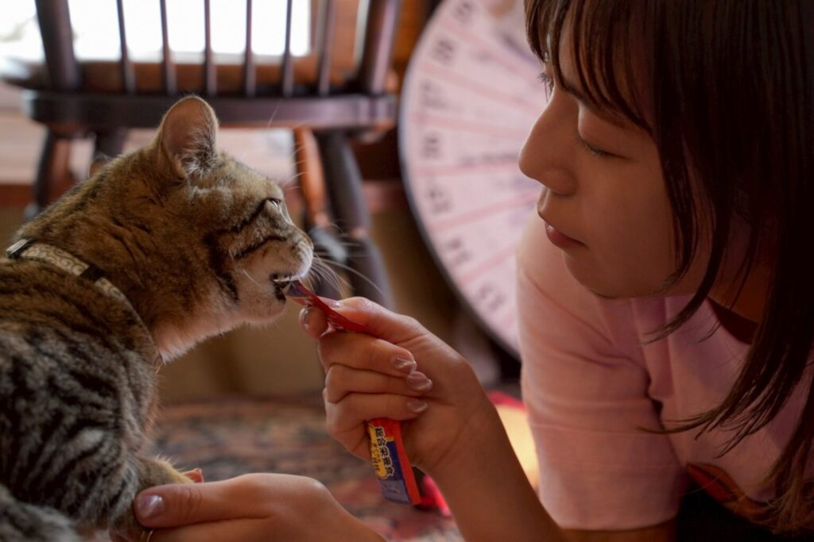
Cat lovers will find this space especially healing. You can:
Sit quietly and let the cats approach you
Pet them gently and take photos
Enjoy simply watching their natural behavior
Even if you cannot have a cat at home, this is the perfect place to experience the joy of being around them.
A Café-Style Coworking Space
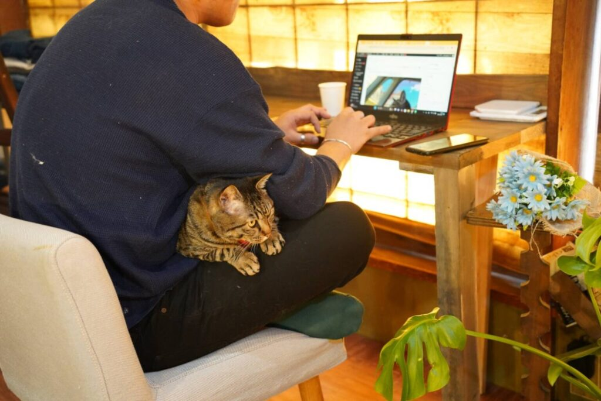
The atelier is equipped with free Wi-Fi and power outlets, making it an ideal spot for remote workers, students, or travelers who need a break.
Many visitors bring their laptops to work, study, or read, while being comforted by the calming presence of cats that come and go freely.
It is a unique place where you can both focus and refresh your mind.
A Rest Stop for Travelers
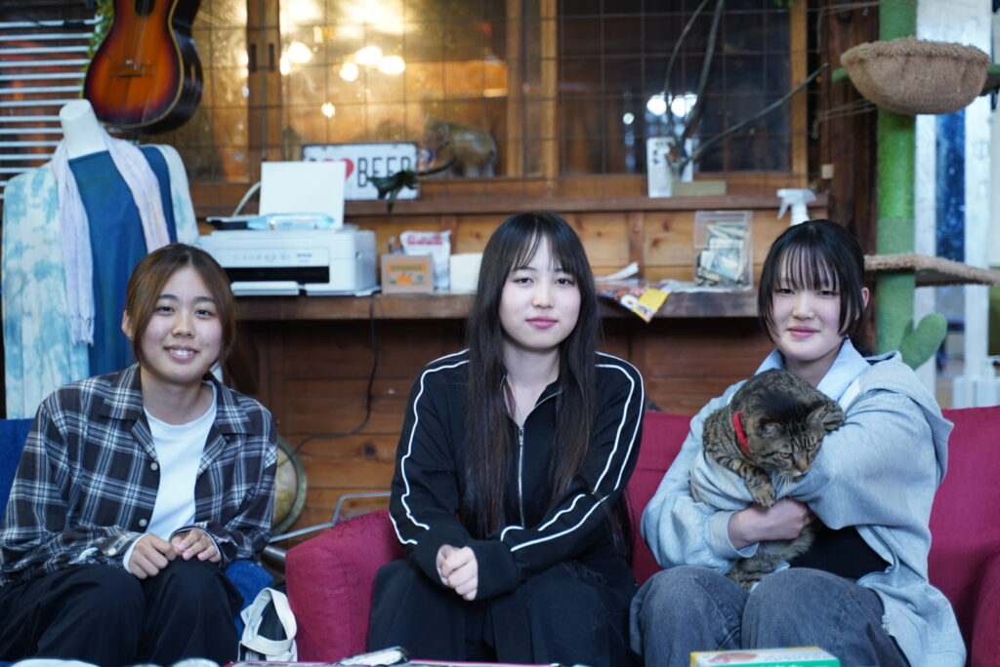
During sightseeing in Kawaguchiko, the atelier is a convenient spot to stop for a cold drink and a short rest.
It is also perfect for drivers on long trips or tourists exploring Mt. Fuji.
The unexpected encounter with friendly cats often becomes an unforgettable memory of the journey.
Events & Private Use
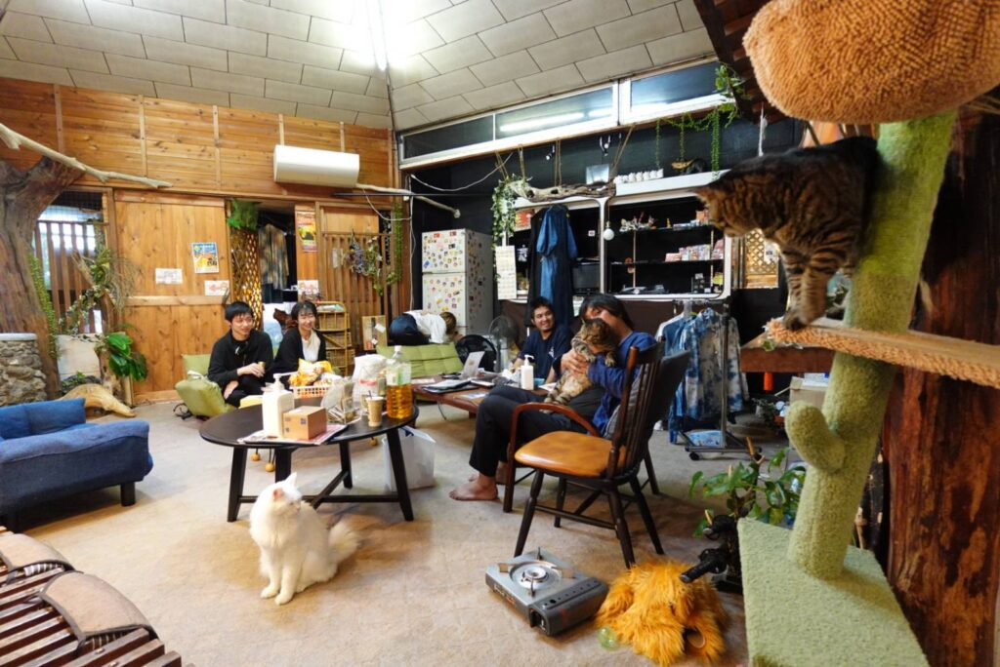
The space can accommodate up to 20 people, making it suitable for:
Workshops and cultural classes
Community meetups or study groups
BBQs or small parties
Photo shoots and video sessions
Special private events
Spending time with cats during a private gathering makes the experience extraordinary and unforgettable.
Reservations and inquiries are always welcome.
Learn About Cat Rescue
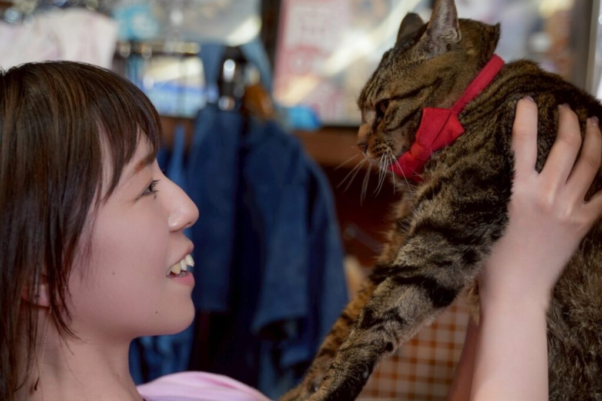
At the atelier, visitors can also learn about:
How each cat was rescued
The daily care they receive
The challenges of animal rescue work in Japan
This is a rare chance to hear the “real voices” of cat rescue activities, something you cannot fully understand from books or the internet.
For people interested in adopting a cat, it is also a valuable opportunity to gain real insight.
Open to Everyone
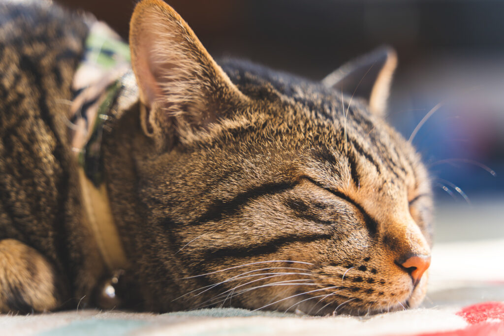
Atelier Takanasensei is a safe and inclusive space, open to all:Children, Seniors, People with disabilities, International travelers
It is a place where people connect gently through the presence of cats, beyond age, nationality, or background.
This diversity gives the atelier a unique value as a true community hub.
Social Contribution
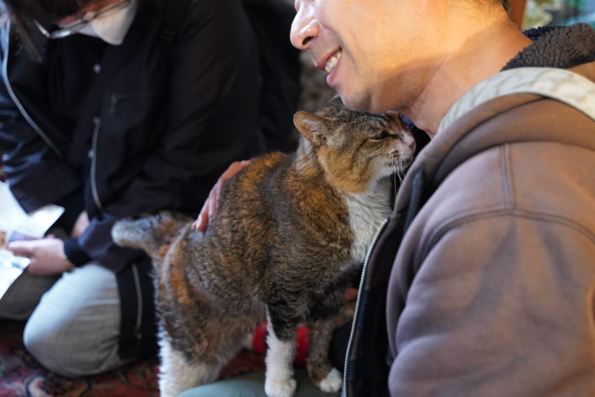
By visiting Atelier Takanasensei, you are also supporting:
Rescued cats – food, medical care, and safe housing
Children’s cafeterias – free meals for kids in need
Local welfare – employment opportunities for people with disabilities
Community activities – clean-up projects and cultural exchange
Your relaxing time with cats becomes a way to contribute to the local community and a better future.
Review
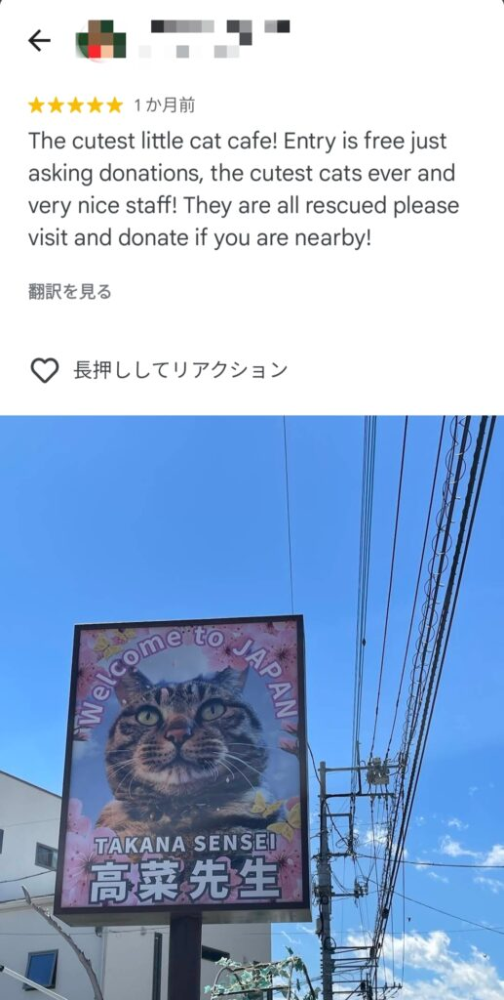
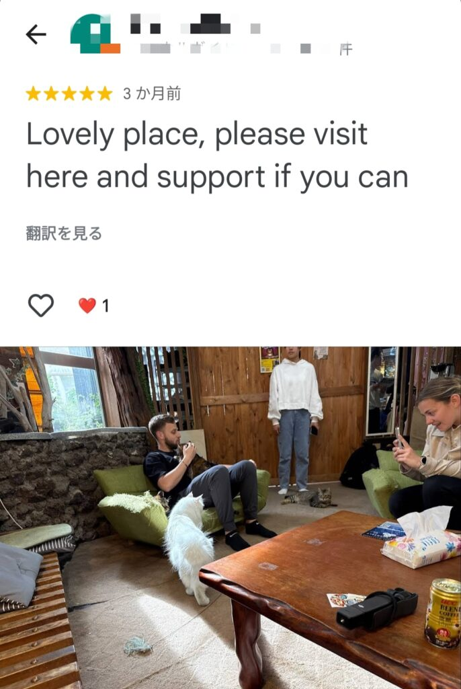
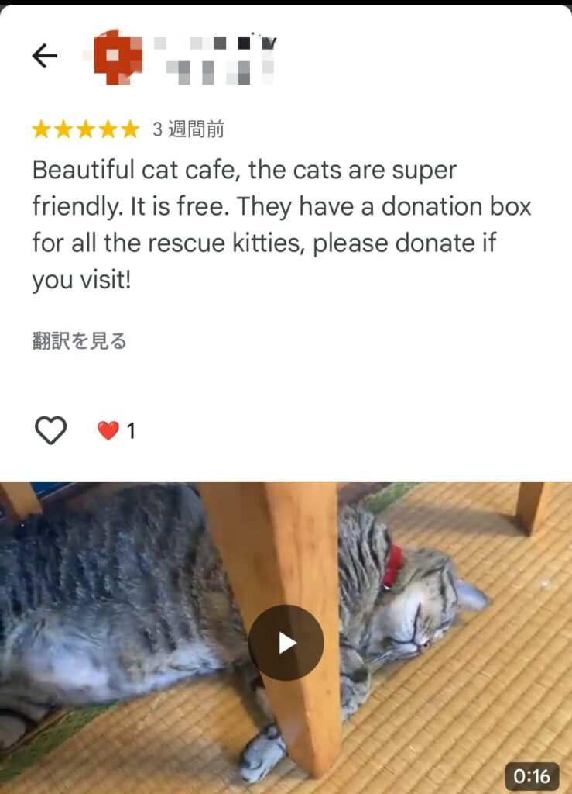